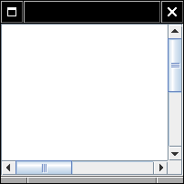

previous
|
start
|
next
Scroll Bars
Scroll bars can be attached to components
Approach #1:
Component
class can turn on scroll bars
Approach #2: Scroll bars can surround component
JScrollPane pane = new JScrollPane(component);
Swing uses approach #2
JScrollPane
is again a component

previous
|
start
|
next